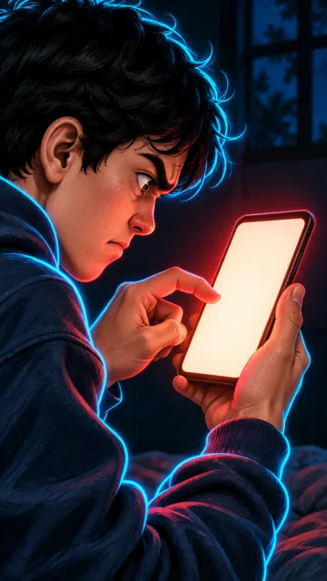

1-sahna — video, 9:16 (tik), 8 s

Nima bo'ladi
Barmoq «Yuborish» tomon tushadi va tegmasdan, millimetr qolganda to'xtaydi. Montajda: shu payt kadr qotadi, kulrang, «To'xtang!»
KameraJuda sekin push-in: yuz va barmoqqa yaqinlashadi
Vertical 9:16 video, 8 seconds, from the attached image. Very slow push-in toward Diyor's thumb and face. Diyor's thumb slowly moves down toward the blank glowing phone screen and stops just a millimetre above it, never touching it; his angry frown slowly softens into hesitation, his eyes blink once. The red glow of the screen pulses softly on his face. The phone screen stays plain and blank for the whole clip. Diyor's thin bright cyan-blue neon line runs exactly along his whole outer silhouette (hair, face, hoodie, arms, legs) with a soft blue glow; it moves with him in every frame and never disappears; nothing else in the frame has this outline. Diyor does not speak at all; no dialogue is heard. Keep every person exactly as in the image for the whole clip: Diyor's round boyish young face, messy black hair, dark navy hoodie, jeans and sneakers; faces must not change into other people; same setting and colours. No music. Negative: no text, no letters, no numbers, no subtitles, no captions, no logos, no brand names, no watermarks, no extra people, no extra hands